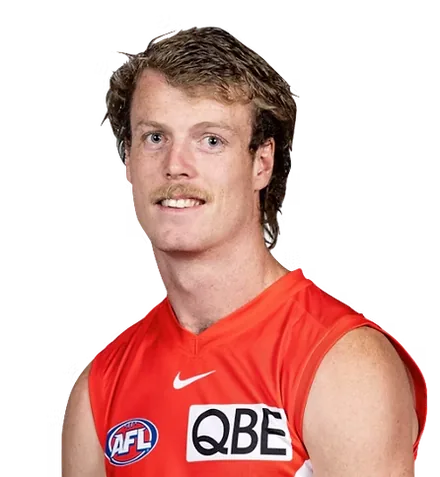
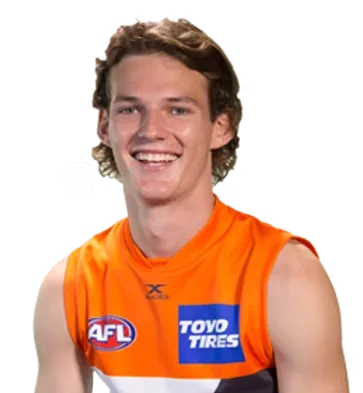
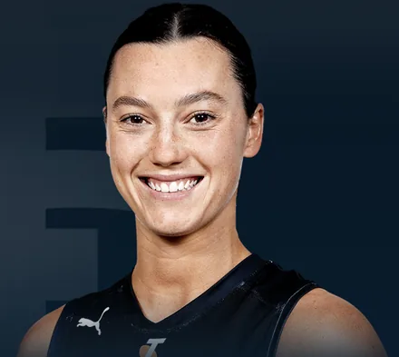
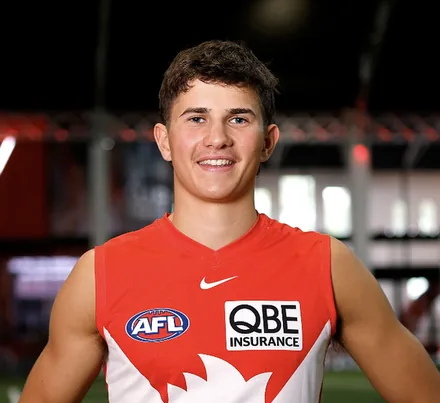
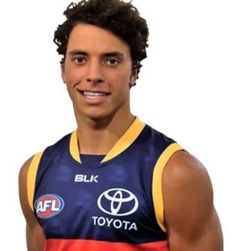
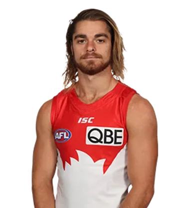

AFL
AFLDane Rampe
Drafted by Sydney Swans
289 games, All-Australian and Bob Skilton Medallist.
View →From local footy in Bulldogs colours to the AFL and AFLW.
Nineteen Bulldogs have gone on to AFL and AFLW lists. Tap a player to read their story.
Ordered by career AFL and AFLW games played, highest first, as at November 2026.
AFL
AFL AFL
AFL
AFL AFLW
AFLW AFLW
AFLW AFLW
AFLW In memoryIn memory · 1991-2020
In memoryIn memory · 1991-2020
AFLW
AFL
AFL
AFL AFL
AFL AFL
AFL